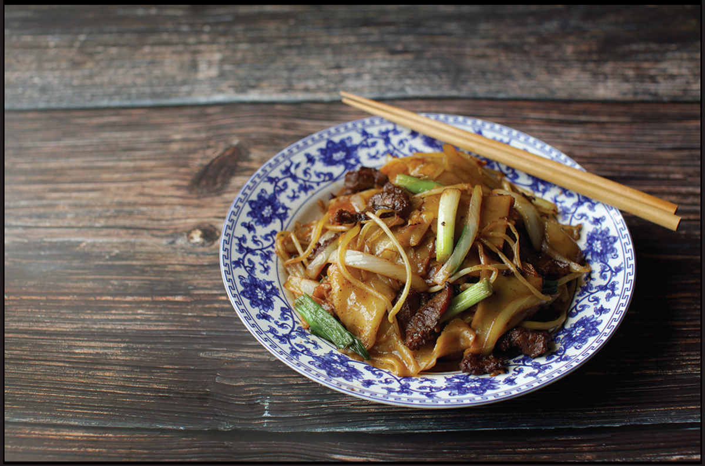

Stir-Fried Rice and Other Starch Noodles
Without the reinforcing power of gluten proteins that wheat flour brings to the table, noodles made from other types of starches—rice, mung bean, tapioca, and the like—tend to be either more delicate than wheat noodles or stickier, and your stir-frying technique has to change a bit to reflect those differences. In this section, we’ll talk about some of the more common non-wheat-noodle stir-fries.

BEEF CHOW FUN
My family has no shortage of strong opinions and preferences, but if we were to collectively choose one dish that would appear on the table as our last meal together, it would undoubtedly be a perfect plate of the Guangzhou classic, beef chow fun.
According to Guangzhou’s tourism board, dry-fried beef hor fun (typically called “beef chow fun” in the West) is the most popular dish in Canton (modern-day Guangzhou), eaten for breakfast, lunch, and dinner. The origins of the dish are not clear, but the story goes that it was created in 1938 by the Xus, a mother-and-son team that operated a food stall during the Japanese invasion and occupation of Canton. At the time, hor fun noodles were typically served in a starch-thickened gravy-like broth. The stall ran out of starch just as a Japanese patrolling officer and his squad stopped to order noodles.* Unable to make the saucy gravy and fearing for their lives, the mother had the idea to stir-fry the noodles in a dry style, stir-frying beef, cooking soy sauce down until it was completely absorbed by the noodles, and finishing it with scallions and bean sprouts. The family kept their lives, and dry-fried beef chow fun was born.
Over the years, my parents and two sisters have spread out across the United States, from Boston to Montana to Colorado to the West Coast, and each time one of us makes a new move, we inevitably get asked “Can you get good beef chow fun there?” Indeed, the dearth of smoky, lightly charred, dry-fried beef chow fun in my sister’s adopted home of Bozeman, Montana, was one of the primary motivators for me to develop a recipe for the dish—notorious for its requirement of a powerful jet-engine-style restaurant burner—that would work for any home cook. (OK, any home cook with a decent blowtorch—which you should have by now!)
Beef chow fun is often compared to a French omelet, in that it’s a simple dish whose preparation relies so much on technique that it can be used as a yardstick for a cook’s skills. So what makes it so hard to perfect? Two things: wok hei and good tossing technique.
The Technique
Wok hei is something we’ve discussed at length already, but nowhere is it more important a factor in flavor than in this dish, where the smoky, singed, almost barbecued aroma of stir-fries cooked in carbon steel over intense heat, with the flame licking into the food as it cooks, is as prominent a flavoring as soy sauce or salt (or, as the case may be, MSG). If you’ve been waiting to pull the trigger on a powerful outdoor burner, perfect beef chow fun is the dish that should make that decision a little easier. For that reason alone, this is the only recipe in the book where I’m including specific instructions for cooking both on a high-output burner and on a home range.
Why is tossing technique so important? First and foremost, it’s for the same reason tossing is important in any stir-fry: it encourages rapid cooking through the constant evaporation and condensation of steam as food is tossed through its own vapors, creating more complex aromas and flavors in the process (see “What Happens When You Toss?” on here for more on the science). With chow fun, it serves a secondary role: with good enough tossing technique, you can minimize the use of a spatula or ladle, which in turn means that delicate chow fun noodles are less likely to break as they cook. This, of course, doesn’t affect the way the noodles taste all that much, but it still improves the dish and is something to strive for if perfection is what you’re after.
The Beef, Vegetables, and Sauce
The ingredients of beef chow fun are simple. It starts with beef. I use skirt or flank steak, which I slice thinly against the grain, then submit to the baking soda and massaging treatment to ensure that it stays extremely tender. The marinade also includes soy sauce, Shaoxing wine, and a touch of cornstarch to keep the beef nice and slippery as it cooks. I used to cook my beef by stir-frying it, but after several tests I’ve switched over to the hot oil “pass through” method, in which you heat up a moderate amount of oil in the wok, then fry the beef by fully submerging it in the hot oil for a few moments before draining it. It doesn’t make the dish taste or feel greasy; rather, it sets the starchy coating on the surface of the beef, ensuring that all the beef is equally tender, with no overcooked or stringy spots.
A mix of alliums and bean sprouts is the classic vegetable accompaniment. I go with a mix of sliced yellow onions, scallions, and garlic, which I stir-fry together with the bean sprouts.
The sauce is also simple: It’s primarily soy sauce (a mix of light and dark), which is added around the edges of the wok to develop some of those seared flavors. Some recipes for chow fun include some douchi (fermented black beans), but I personally find that they distract from the pure flavors of wok hei and seared soy sauce (though they can still be a good addition in situations where wok hei is not possible).
The Noodles
The trickiest part of this recipe is finding the right noodles. Hor fun noodles, also called shahe fen, are made by steaming a thin layer of rice flour batter until it sets, then hand-cutting it into wide noodles and coating the noodles in a bit of oil to prevent them from sticking. Here’s the issue: while fresh hor fun is pliable and elastic, hor fun that has been refrigerated for any length of time will be stiff. Rather than bending, it tends to crack when you attempt to stir-fry or even unfold it.
This all has to do with starch retrogradation. Cooked starches have a fluid, malleable structure. It’s what makes fresh bread so stretchy and a freshly griddled corn tortilla pliable and stretchy. As they cool, starches will start to take on a crystalline structure, becoming stiffer. This process, known as starch retrogradation, is what we call staling, and it’s what makes old bread hard to chew.† With some starches, this retrogradation is reversible: reheating a loaf of stale bread in the oven or toasting a stale English muffin will soften it up again. However, with some starches, that retrogradation is only partially reversible. This is the reason a reheated corn tortilla will never be as pliable or elastic as a fresh one and why refrigerated hor fun noodles are so difficult to work with.
Rice starch is not as bad as cornstarch when it comes to irreversible retrogradation—you can use refrigerated hor fun noodles by dropping them into boiling water and very gently teasing them apart to let the water flow around them until they’re mostly pliable. You can even use dried wide rice noodles for chow fun. Either option will produce delicious, more-than-edible results, but if you, like me, are constantly chasing that perfect chow fun high, nothing but fresh noodles will do. Fortunately, they are among the easiest noodles to make at home. Both Grace Young and Pailin Chongchitnat have excellent rice-noodle-making guides available for free online if you’d like to try your hand at them.
Reheating Refrigerated Noodles in the Microwave
The microwave can also be a good tool for reinvigorating stale, stiff noodles that have spent too long in the refrigerator. To reheat them, place the noodles on a microwave-safe plate and put them in the microwave next to a mug of hot water (this water will steam and help keep the noodles from drying out). Microwave at 20-second intervals until the noodles feel soft and pliable all the way through (around 2 minutes total per pound of noodles). Remove the noodles from the microwave, and as soon as they’re cool enough to handle, cut them as wide as you’d like, gently separate the folded noodles, and toss them in a large bowl with a drizzle of oil, occasionally fluffing them with your fingers to keep them from sticking until ready to stir-fry.
*Why do so many food origin stories begin when a cook is short of a specific ingredient?
†Contrary to popular belief, stale bread is not necessarily dry bread, though staling and drying do often go hand in hand.